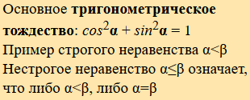
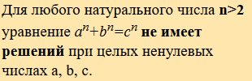

| Вариант |
Оформленный текст |
Список |
Таблица |
Форма с управляющими элементами |
Ссылки и изображения |
| 0 |
 |
Двухуровневый список с вопросами и вариантами ответов. |
Таблица с данными об успеваемости 3-х студентов по всем дисциплинам 3-го курса. |
Форма регистрации посетителя сайта. |
Изображение-баннер, ведущий на официальный сайт университета. |
| 1 |
 |
Многоуровневый список, отражающий структуру университета - по факультетам и кафедрам. |
Таблица с данными курса валют. |
Форма голосования. |
Содержание страницы, состоящее из относительных гиперссылок-якорей к ее подразделам. |
| 2 |
 |
Двухуровневый список, показывающий распределение групп факультета КИУ по специальностям СП, КСМ и СКС. |
Таблица с данными прогноза погоды. |
Форма для поиска. |
Относительная гиперссылка для перехода к другой странице ресурса. |
| 3 |
 |
Выпадающий список студентов группы (можно ограничится одной бригадой). |
Таблица с данными оглавления. |
Форма для ввода информации о студенте. |
Относительная гиперссылка, ведущая к требуемому раздела другой страницы ресурса. |
| 4 |
 |
Список дисциплин 3-го курса, созданный с помощью списка определений. |
Таблица периодических элементов (фрагмент). |
Форма для ввода информации о комплектующих ПК. |
Изображение, по клику на которое происходит переход на сайт университета, сайт кафедры или расписание - в зависимости от места клика. |